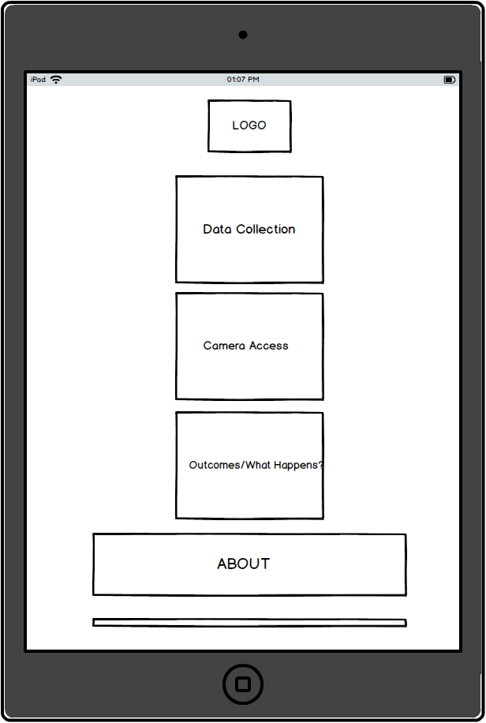
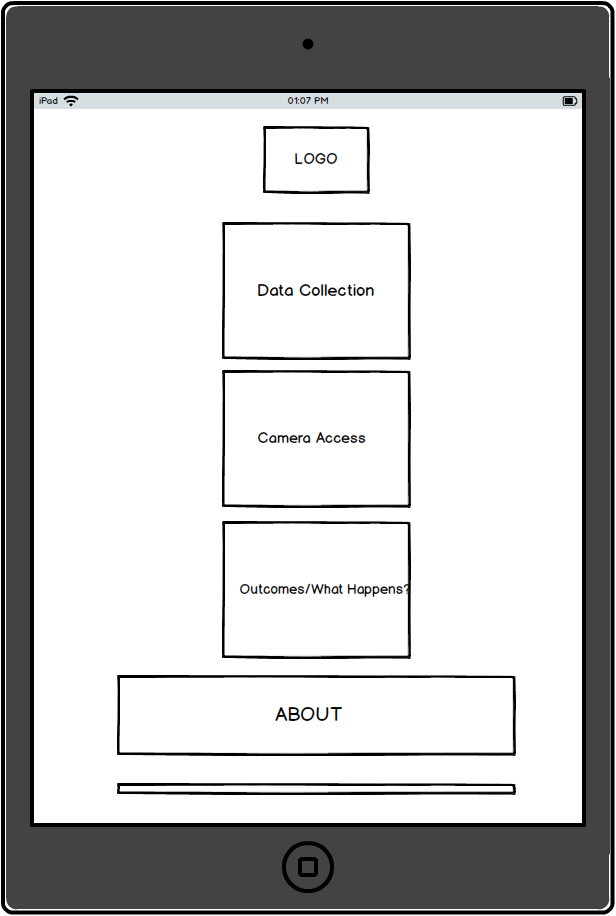
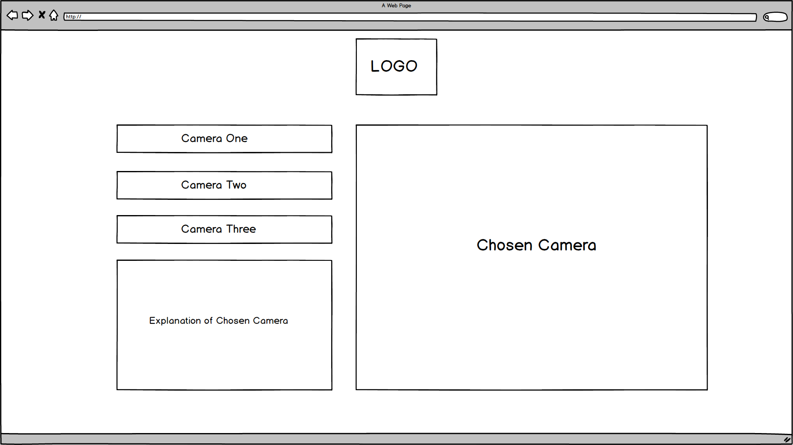
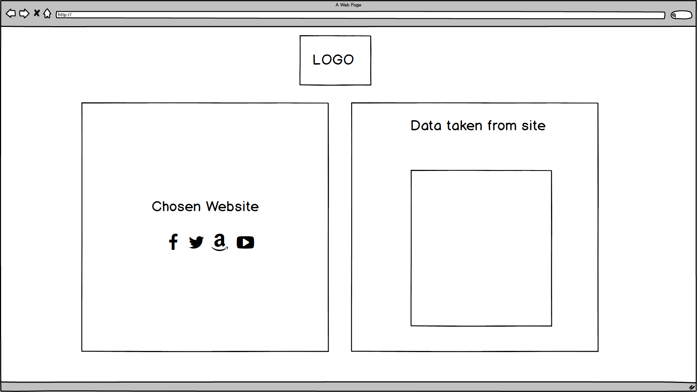
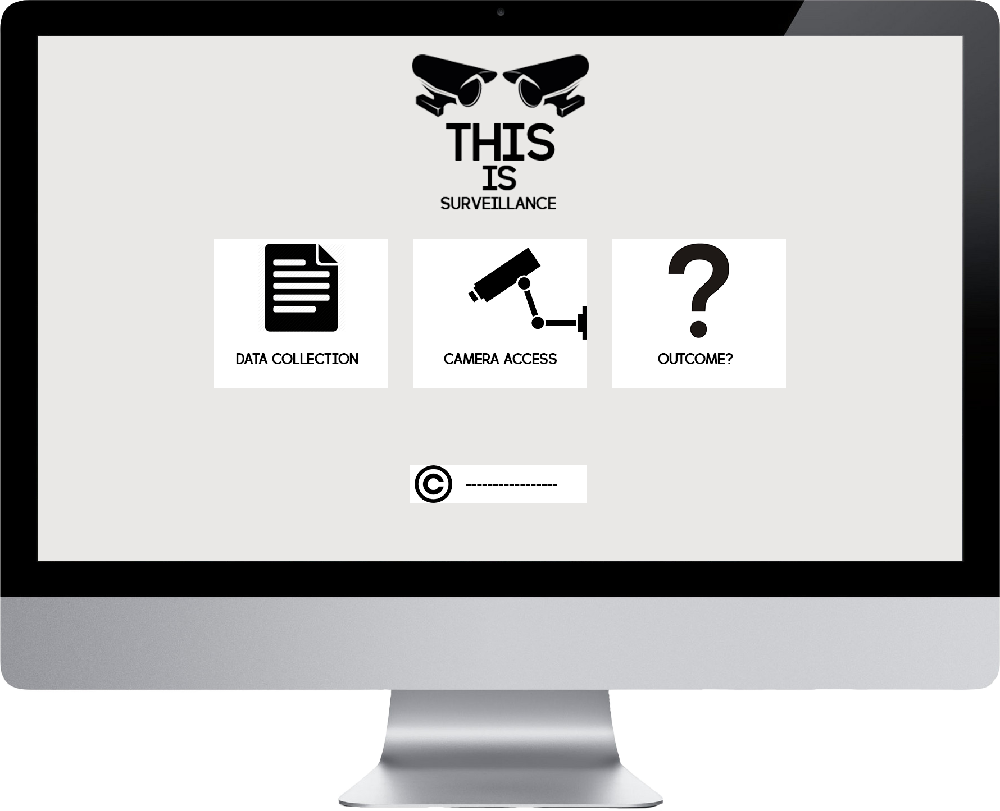
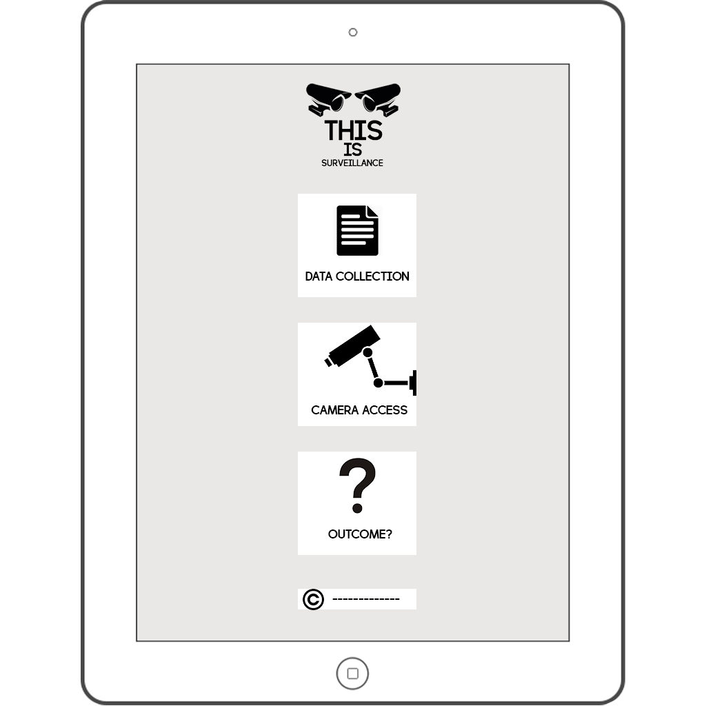
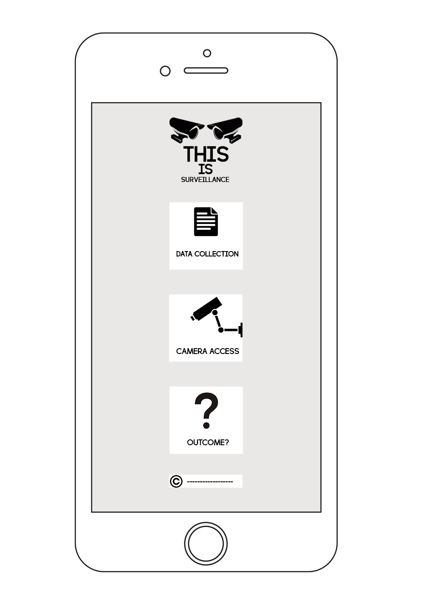

Proposal What is it?
Going from the topic of surveillance, I want to create a website that gives the user an understanding and an interactive aspect of the website of what surveillance is. Because surveillance is a topic that is known to many but isnt explained very well to the public. I want to be able to show users what survillance is, what it does and how it affects us. This site will be informative and will have interactive features for the user in both the data collection button and the camera access button.
Concept
This website will be an informative and interactive where the user can experience areas of surveillance and gain an understanding of the topic. There will be three areas where the user can click on to and be taken to the specific part about surveillance. The first area will be how data is taken in the websites that we browse. This can be from social media sites to online shopping websites. It will show users that information that is input on their website can be collected and used for other purposes. The second area is focused on the use of cameras around cities and places of interest. What are the cameras capturing and what information is taken and used from looking at footage of us. This area is to show that there postives and negatives to the use of cameras. The last area will show the outcomes of each data and the use of cameras. Users will be able to see what happens when a certain scenario happens and what effects it has on us.
Homepage Desktop, Mobile, Tablet

 

Wireframes Camera Access/Data Collection  
Above I have shown homepage layouts of what the site will look like. I havent made them very complicated because I want the user to be able to see and click on what area they want to explore into. The simple layout includes three buttons on the homepage to give it a interactive feel where any user wont be looking where to click because what they are after will be in front of them. Also below includes wireframes of the areas that will be clicked into by the users. They are also a very simple layout so the information that is presented to them can be read and understood by the user.
Mock-Ups Desktop, Tablet, Mobile   
Ive created mock-ups of what the website would look like on the common three devices. As you can see, each button has a small icon to represent whatb the user is clicking into. The layout is not messy and is suppose to give the user an easy experience while they are browsing through the three areas of the site
Sensors
Sensor/Video Capture
I've incorporated a video capture feature for the mobile users of the site. I've done this because, I want to give users a chance to explore with taking footage for themselves and seeing if they can grab information from what they have captured. It gives a small interactive experience for the users.